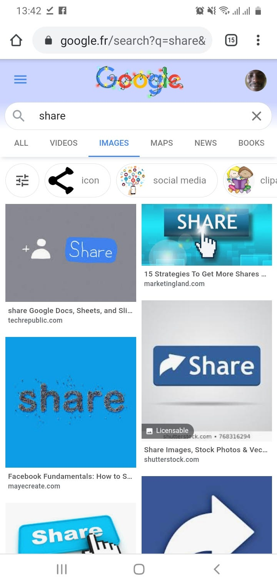

Dec 26, 2020
Sharenauts vs internauts
The internet has been created as a way of connecting machines but as we human beings are users of those machines, it ended being a connection engine that connects a person to persons. Connected people always tend to share things that a natural behavior for us to interact with our peers. It happens that last-born internet platforms have used this trap for converting us to bad sharenauts I mean internet users sharing our lives in social media rather than sharing knowledge and advice in blogs, news article, and… so what a good sharenaut is? A good sharenaut is a pointer for the other sharenauts connected to her. She is here to point them in a certain direction they could or not take. For example, this sharenaut can just tell others what she thing about a book she has read. She could share her book’s notes with others. What if she listed and shared all persons cited in this book. Would it be easier for us to have crowdsourced data about books but books matter not so much and people are already telling what they things about food using platforms like yelp. It is not too bad even if it could be better. Of course, food matters but books also matter like software.
Don’t be an internaut only where you can be better by being a sharenaut someone who shares her or his view of the world online for others to benefit from.
Let’s become sharenauts.
